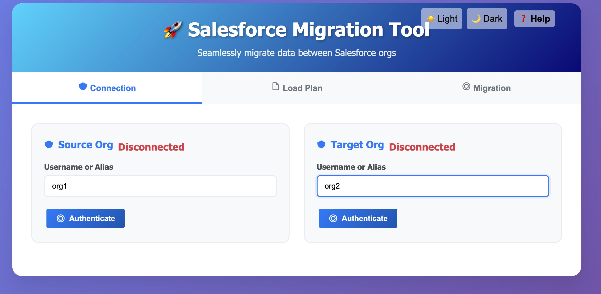
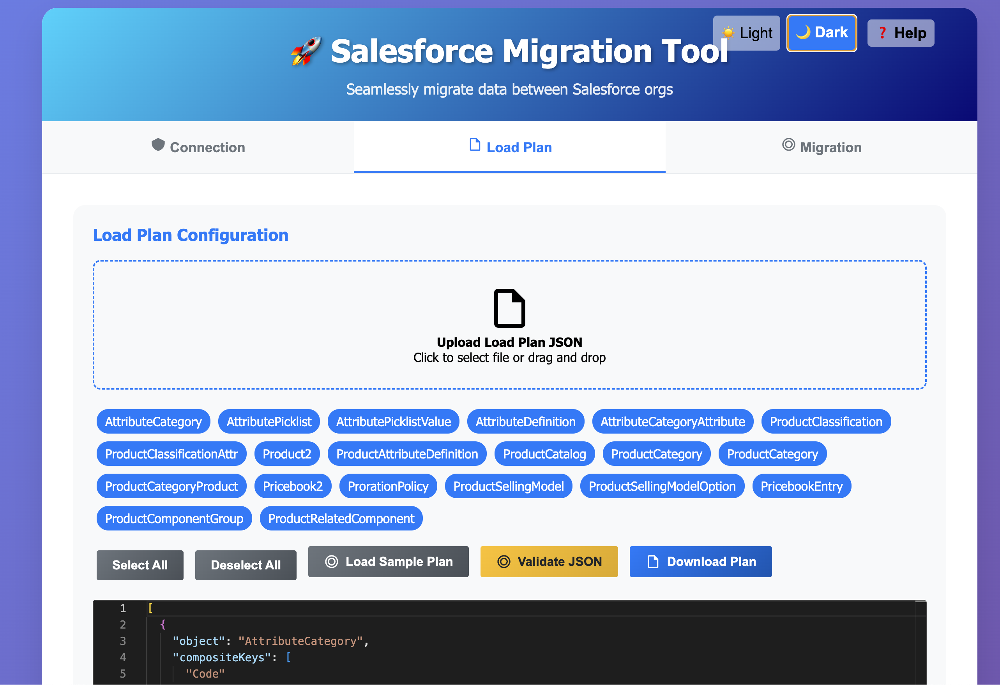
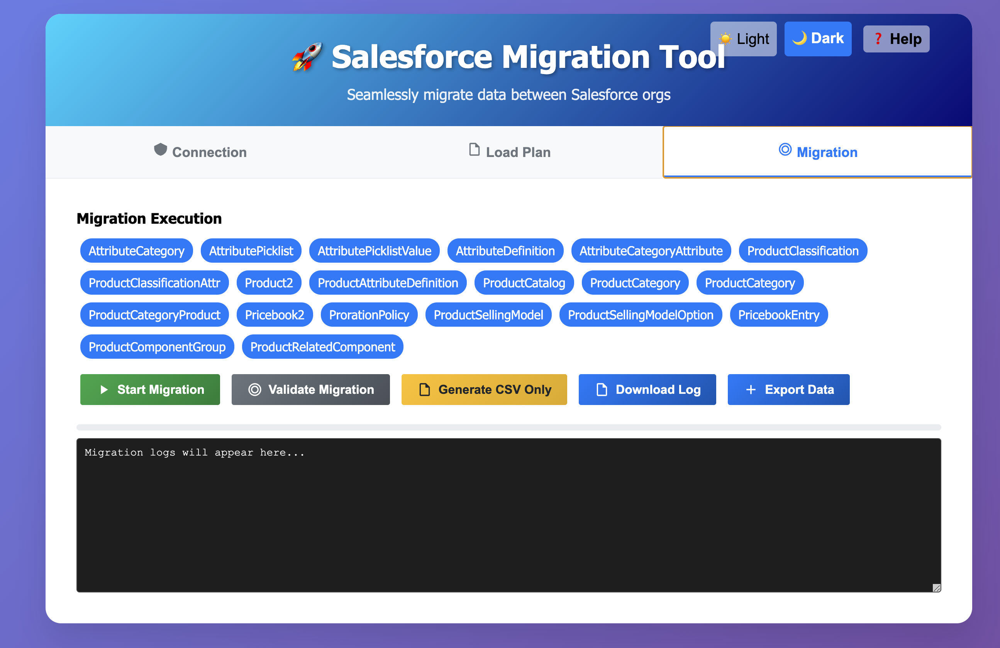

Salesforce Migration Tool
Overview
The Salesforce Migration Tool is a modern desktop application designed to revolutionize data migration between Salesforce organizations. It supports complex data migrations, including single and two-step processes, using JSON load plans to define objects, queries, and field mappings. The tool leverages the Salesforce CLI and Bulk API 2.0 for secure and efficient data operations.
Features
- Secure Authentication: Securely authenticate with source and target Salesforce orgs using usernames or aliases via Salesforce CLI.
- JSON Load Plans: Define migration plans in JSON format, supporting single-step and two-step migrations with composite keys and field mappings.
- Editor Integration: Edit and validate JSON load plans with real-time syntax checking and intelligent autocomplete.
- High-Performance Migration: Execute migrations with support for inserts and updates, using Bulk API 2.0 for lightning-fast data loading.
- Smart CSV Generation: Generate CSV files for source and target data, with options to export data without loading.
- Advanced Data Export: Export data from both source and target orgs as CSV files, packaged into ZIP archives with comprehensive summary reports.
- Real-time Progress Tracking: Monitor migration progress with an animated progress bar and detailed logs with color coding.
- Intelligent Pause and Resume: Pause migrations after each object for review, with options to continue or stop based on validation results.
- Modern Theme Support: Toggle between light and dark themes with smooth transitions for optimal user experience.
- Intuitive Drag-and-Drop: Upload JSON load plans via drag-and-drop or file selection with visual feedback.
Setup Requirements
To use the Salesforce Migration Tool, ensure the following prerequisites are met:
- Node.js: Install Node.js (v16 or higher) to support Salesforce CLI
installation.
node --version - Salesforce CLI: Install globally using:
Verify installation with:npm install -g @salesforce/clisf --version - Authenticated Salesforce Orgs: Authenticate your source and target orgs using:
Check authenticated orgs with:sf org login web -a <alias>sf org list
How to Use
Follow these steps to migrate data using the Salesforce Migration Tool:
- Authenticate Organizations:
- Navigate to the Connection tab.
- 
- Enter the username or alias for the source and target orgs.
- Click Authenticate for each org. The status will update to "Connected" upon successful authentication with a green indicator.
- Configure Load Plan:
- Go to the Load Plan tab.
- 
- Upload a JSON load plan by clicking the upload area or dragging and dropping a
.jsonfile with visual feedback. - Alternatively, click Load Sample Plan to use a predefined template.
- Select objects to include in the migration from the interactive modal.
- Edit the JSON in the Editor with syntax highlighting, then click Validate JSON to ensure correctness.
- Download the edited plan using Download Plan if desired.
- Execute Migration:
- Navigate to the Migration tab with enhanced UI.
- 
- Select objects to migrate using the intuitive pill box interface.
- Click Validate Migration to verify org connectivity and object configurations with real-time feedback.
- Click Start Migration to begin data transfer. The migration pauses after each object with smart continuation options.
- Alternatively, click Generate CSV Only to export data without loading it to the target org.
- Use Export Data to download CSV files from both orgs, packaged as
all.zipwith detailed summaries. - Monitor progress with the animated progress bar and color-coded logs. Download comprehensive logs using Download Log.
Load Plan Structure
The load plan is a JSON file that defines the objects, queries, and field mappings for migration. Below is an example structure with enhanced formatting:
[
{
"object": "AttributeCategory",
"compositeKeys": ["Code"],
"query": "SELECT Name, Description, Code FROM AttributeCategory WHERE Code != null",
"fieldMappings": {
"Name": "Name",
"Code": "Code",
"Description": "Description"
}
},
{
"object": "AttributePicklist",
"compositeKeys": ["Name"],
"query": "SELECT Name, Description, DataType, Status FROM AttributePicklist WHERE Status = 'Active' AND Name != null",
"fieldMappings": {
"Name": "Name",
"Description": "Description",
"Status": "Status",
"DataType": "DataType"
}
},
{
"object": "AttributeCategoryAttribute",
"compositeKeys": ["AttributeCategory.Code", "AttributeDefinition.Code"],
"query": "SELECT AttributeCategory.Code, AttributeDefinition.Code FROM AttributeCategoryAttribute",
"fieldMappings": {
"AttributeCategoryId": {
"lookup": {
"object": "AttributeCategory",
"key": "Code",
"field": "AttributeCategory.Code"
}
},
"AttributeDefinitionId": {
"lookup": {
"object": "AttributeDefinition",
"key": "Code",
"field": "AttributeDefinition.Code"
}
}
}
}
]Key components explained:
- object: The Salesforce object to migrate (e.g.,
Product2,Account). - compositeKeys: Array of fields used to identify records uniquely for upsert operations.
- query: SOQL query to retrieve records from the source org with optimized filtering.
- fieldMappings: Defines how source fields map to target fields, supporting direct mappings, complex lookups, and composite lookups with validation.
- steps: Optional array for multi-step migrations, each with its own query and field mappings for complex dependency handling.
Troubleshooting
- Salesforce CLI Not Found: Ensure Salesforce CLI is installed and accessible in your PATH.
Run
sf --versionto verify. Install withnpm install -g @salesforce/cli. - Authentication Failure: Verify usernames/aliases and ensure orgs are
authenticated using
sf org login web -a <alias>. Check token expiration. - Invalid JSON: Check the load plan for syntax errors in the Editor. Use Validate JSON to identify and highlight issues with detailed error messages.
- Migration Errors: Review color-coded logs in the Migration tab. Common issues include missing required fields, invalid SOQL queries, or insufficient permissions.
- Bulk API Issues: Ensure the target org supports Bulk API 2.0 and that the user has appropriate permissions. Check API limits and governor limits.
- Performance Issues: For large datasets, consider breaking migration into smaller batches and ensure adequate API limits are available.